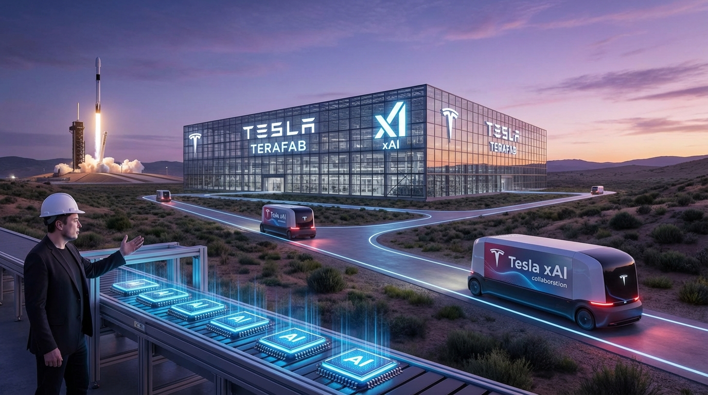

"Global chip output meets only 3% of our companies' future needs. Terafab changes that equation — permanently."
— Elon Musk, Terafab Launch Event, March 21, 2026
On March 14, 2026, Elon Musk posted seven words on X: "Terafab Project launches in 7 days." Seven days later, inside the historic Seaholm power plant in downtown Austin, Tesla, SpaceX, and xAI unveiled one of the most ambitious semiconductor projects in history. Terafab — a $25 billion chip fabrication initiative targeting an unprecedented one terawatt of AI compute annually — is Battery Day on steroids. And this time, the skeptics may need to think twice.
What Is Terafab?
Terafab is a joint semiconductor fabrication venture involving three of Elon Musk's companies: Tesla, SpaceX, and xAI. Unlike traditional chip manufacturing partnerships — which typically involve fabless designers partnering with standalone foundries like TSMC or Intel — Terafab is designed to be fully vertically integrated. The chips made at Terafab facilities will serve three distinct but complementary purposes: powering Tesla's next-generation vehicles, fueling the Optimus humanoid robot program, and enabling space-hardened AI processors for solar-powered data centers in orbit.
The project spans two planned fabrication facilities, both located in Austin, Texas — in close proximity to Tesla's existing Gigafactory Texas. The first facility is expected to come online as a pilot plant by late 2026, with small-batch production of Tesla's fifth-generation AI chip, the AI5, beginning this year. Volume production is targeted for 2027.

The AI5 Chip: First Product of Terafab
Tesla's AI5 chip will be among the first products designed specifically for the Terafab production line. Building on the architecture introduced with HW4 (Hardware 4), the AI5 chip is engineered for both training and inference workloads — a significant expansion from the inference-focused designs Tesla has used in its vehicles to date.
For Tesla's autonomous driving ambitions, the AI5 represents a step-change in onboard compute capability. The chip is rumored to deliver approximately 10x the inference performance of its predecessor while maintaining thermal and power envelopes suitable for vehicle integration. More importantly, the chip's architecture allows it to handle multi-modal inputs — camera, radar, ultrasonic, and potentially LIDAR fusion — in real time.
But the AI5's role extends far beyond vehicles. Tesla's Optimus humanoid robot program depends heavily on efficient, purpose-built silicon. Optimus requires a chip that can process vision, balance, and tactile feedback simultaneously — all within a power budget compatible with battery-powered operation. The AI5 is being designed with exactly these constraints in mind, making it the silicon foundation of Tesla's broader robotics ambitions.
Beyond Earth: Space-Hardened AI Processors
Perhaps the most technically ambitious element of Terafab is the development of space-hardened AI processors. Working with SpaceX, the venture aims to produce chips capable of operating in the harsh environment of space — radiation-tolerant designs that can function without the thermal management infrastructure available on Earth.
The target application: solar-powered AI satellites. xAI, Musk's AI startup, has been vocal about its ambition to build AI data centers in orbit. The logic is compelling: space offers abundant solar energy, essentially free cooling, and no terrestrial land constraints. The challenge has always been the hardware — specifically, chips that can survive launch vibration, cosmic radiation, and the thermal extremes of low Earth orbit while still delivering meaningful AI compute.
Terafab's space-hardened processors represent a direct answer to that challenge. If successful, they could unlock a new category of AI infrastructure — autonomous orbital data centers capable of running inference workloads at scale, powered entirely by photovoltaic arrays.
Strategic Implication
Terafab isn't just about chips for Tesla vehicles. It's about controlling the entire AI value chain — from silicon design to final deployment — across automotive, robotics, and space infrastructure. This is vertical integration taken to its logical extreme.
The Scale Problem Musk Is Solving
To understand why Musk is investing $25 billion in a chip fab, consider the problem he's trying to solve: AI chip scarcity.
Current global semiconductor production — even with massive expansions by TSMC, Samsung, and Intel — cannot come close to meeting the projected compute demands of Musk's companies. According to figures shared at the Terafab launch event, global chip output currently satisfies approximately 3% of the combined future needs of Tesla, SpaceX, and xAI. That's not a supply chain inconvenience — it's a fundamental bottleneck on growth.
For Tesla, the constraint is acute. The company's Full Self-Driving (FSD) and robotaxi ambitions require enormous compute for both training and inference. Every mile driven by every Tesla vehicle generates data that could theoretically improve the fleet's AI models. But processing that data requires chips — and current supply arrangements mean competing with every other AI company on the planet for finite foundry capacity.
xAI faces a similar constraint. Grok, xAI's large language model, requires training infrastructure that can only be built with access to large numbers of AI accelerators. As Grok evolves toward more capable versions, its chip requirements grow proportionally.
SpaceX's Starlink and future deep-space communication systems have their own silicon needs that don't always align with commercially available parts. Building custom chips through Terafab gives SpaceX the ability to optimize for its specific thermal, radiation, and power environments.
Wedbush: "The Largest AI Bottleneck"
Wall Street analysts have taken notice. Wedbush Securities, in a note published shortly after the Terafab announcement, described the initiative as addressing what they see as "the largest bottleneck" in AI development today.
The framing is significant. For years, the dominant narrative around AI infrastructure has been about software and algorithms — the latest model architectures, the newest prompting techniques, the race to AGI. Terafab shifts the conversation to hardware. Without sufficient compute, even the most sophisticated models cannot be trained. Without efficient inference chips, they cannot be deployed at scale.
The semiconductor supply chain has emerged as a critical geopolitical and economic flashpoint. The CHIPS Act, export controls on advanced AI chips to China, TSMC's strategic importance to Taiwan — all of these factors have elevated chip manufacturing from an engineering concern to a national security priority. By building domestic fab capacity in the United States, Terafab positions itself — and Tesla — at the intersection of technology policy and industrial strategy.
The Skeptics' Case: Why "Battery Day on Steroids"?
The "Battery Day on steroids" characterization — coined by critics following the March 21 announcement — deserves serious examination. Tesla's 2020 Battery Day event promised revolutionary battery technology that would enable a $25,000 electric vehicle. That vehicle has not materialized. The promises, critics argue, exceeded what physics and manufacturing reality could deliver.
The skepticism is understandable. Semiconductor fabrication is among the most capital-intensive and technically complex industries on Earth. TSMC, the world's leading advanced foundry, spends tens of billions of dollars per year just to maintain its technology lead. Building a competitive fab from scratch requires not just capital but talent, process technology, and yield management expertise that takes years to develop.
There are legitimate questions about timeline and execution risk. Pilot production by the end of 2026 is aggressive. Volume production in 2027 is even more so. The gap between "we plan to produce chips at this facility" and "we are producing chips that meet our performance specifications at commercial volumes" is enormous.
Furthermore, the "one terawatt of compute" target is staggering. To put it in perspective: NVIDIA's entire H100 production in 2024 amounted to a fraction of a terawatt of compute. Achieving one terawatt — even by 2030 — would require fab output that rivals or exceeds current global advanced packaging capacity. The claim deserves scrutiny.
The Critical Question
Terafab's success hinges not on ambition but on execution. Can Tesla and SpaceX attract the process integration talent needed to run a competitive fab? Can they achieve yields that make economic sense? The answers will determine whether Terafab is transformative or another case of vision outpacing reality.
Vertical Integration as Competitive Moat
Despite the skepticism, there's a coherent strategic logic to Terafab — and it's rooted in Tesla's core competency: vertical integration.
Tesla has always differentiated itself through control of its entire value chain. It designs its own chips (for autonomy and energy management), builds its own battery packs, develops its own vehicle software, and operates its own charging network. This approach has trade-offs — it requires enormous capital and expertise — but it also insulates Tesla from supplier dependencies that have crippled other automakers.
Terafab extends this philosophy to silicon. By designing and manufacturing its own AI chips, Tesla gains several advantages:
- Custom optimization: Tesla can design chips precisely for its workloads — inference for autonomous driving, sensor fusion, robot control — rather than adapting general-purpose AI accelerators.
- Supply security: In an era of chip shortages and geopolitical uncertainty, owning fabrication capacity is a strategic asset.
- Cost structure: At sufficient volumes, internal fab capacity can be more cost-effective than paying foundry margins.
- Speed of iteration: Co-designing silicon and software enables faster iteration cycles than waiting for roadmap alignment with external chip vendors.
SpaceX brings complementary capabilities. The company has deep expertise in radiation-hardened electronics through its Starlink and Starship programs. That expertise translates directly to building fab processes that can produce space-qualified chips — a niche that traditional foundries serve poorly.
What It Means for the AI Industry
Regardless of Terafab's ultimate success or failure, the announcement signals something important about the AI industry's trajectory: the next phase of AI development will be hardware-constrained.
For years, the AI industry operated on the assumption that compute would continue to become cheaper and more abundant. Scaling laws suggested that bigger models trained on more data would continue to deliver improvements. But physical constraints — fab capacity, energy availability, thermal management — are emerging as real limits on that scaling trajectory.
Terafab is a direct response to these constraints. By investing in dedicated fabrication capacity, Musk's companies are betting that the limiting factor in AI advancement will shift from algorithms to silicon — and that controlling silicon supply will become a decisive competitive advantage.
The implications for enterprise technology leaders are significant. Organizations building AI strategies need to think carefully about their own hardware dependencies. Cloud compute costs, GPU availability, and model inference economics are all influenced by underlying semiconductor supply chains. Understanding who controls that supply — and how — is increasingly relevant to strategic planning.
Looking Ahead: The Next 18 Months
The Terafab story is just beginning. The critical period runs from now through the end of 2027. Here's what to watch:
Late 2026: Pilot facility completion and initial AI5 production runs. The quality and yield of these early chips will set the tone for everything that follows. If the AI5 delivers its promised performance improvements, it validates the Terafab approach. If yields are poor or performance disappoints, the timeline for volume production slips.
2027: Volume production ramp and expansion of the second facility. Space-hardened chip development milestones. Any joint announcements from xAI regarding Grok training on Terafab-produced silicon.
2028 and beyond: If Terafab achieves its targets, the competitive landscape for AI chips shifts meaningfully. Tesla becomes a vertically integrated AI company — designing silicon, deploying it in vehicles and robots, and running AI workloads in space. The differentiation between "automaker," "AI company," and "space company" blurs further.
The Bottom Line
Terafab is either the next chapter in Musk's track record of bold, execution-heavy bets — or another example of ambition outrunning engineering reality. The truth, as always, lies somewhere in between.
What's clear is that the announcement has forced a broader conversation about AI infrastructure. Compute is not infinite. Silicon supply is not guaranteed. The companies that control semiconductor production will have a decisive advantage in the race to build more capable AI systems.
For enterprise leaders, the lesson is not to invest in chip fabs — it's to understand the supply chains underlying your AI strategy. Whether you're building on NVIDIA hardware, cloud GPUs, or custom silicon, the physics of semiconductor manufacturing shapes what's possible. Terafab is the most dramatic example yet of a company betting that controlling that physics is worth $25 billion.
We'll know more in 18 months. For now, Terafab is the most interesting story in AI hardware — and a reminder that in technology, the biggest bets are often the ones that seem most impossible.